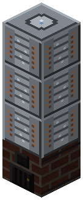
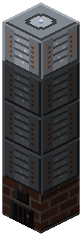
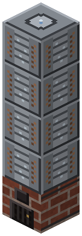
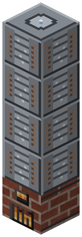

Атмосферная колонна (печь Шухова)

Печь Шухова под колонной: над ней 3-4 секции столбом.
Печь Шухова под колонной: над ней 3-4 секции столбом. 1000 mB нефти + 100 mB пара -> газ 30, бензин 200, керосин 120, солярка 250 (только 4 секции), мазут 350 (50 сгорает в печи). Нефть - в печь, мазут - с печи, остальное - с секций.
Параметры
| Эпоха | 3 — Электричество |
|---|---|
| Многоблок | да: секции колонны Секция ректификационной колонны столбом; над печью |
| Привод | пар |
| Баки, mB | 16000, 8000, 8000, 8000, 8000, 8000, 8000 |
| что делает | 1000 нефти -> газ 30, бензин 200, керосин 120, солярка 250, мазут 350; часть мазута сгорает в печи |
| энергия на входе | пар (отпарка) + свой мазут |
| на выходе | топлива (мазут, солярка, бензин, керосин, газ) |
| из чего | кирпич, печь, стальные листы, стальная труба |
Числа
| колонна: нефти на партию | 1000 mB |
|---|---|
| колонна: партия | 100 тик |
| колонна: газ с партии | 30 mB |
| колонна: бензин с партии | 200 mB |
| колонна: керосин с партии | 120 mB |
| колонна: солярка с партии (4 секции) | 250 mB |
| колонна: мазут с партии, до печи | 400 mB |
| колонна: мазута сгорает в печи на партию | 50 mB |
Кто кормит
- oil ← Реактор высокого давления, Нефтяная скважина
- steam ← Парогенератор АЭС
Кого кормит
- машины Zavod её продукт не едят
Как устроено (из кода)
Атмосферная колонна (трубчатая печь Шухова, 1891 + ректификация): низ колонны - печь, над ней столбом секции column_section (MIN_SECTIONS..MAX_SECTIONS). Партия: BATCH mB нефти + STEAM пара (отпарка), TIME тиков -> газ, бензин (топливо BC), керосин, солярка, мазут; часть мазута (HEAT) сгорает в печи - энергии из воздуха нет. Низкая колонна (3 секции) солярку не отделяет - она уходит в мазут. Отбор - с секций (верхняя - газ, ниже бензин, керосин, солярка), мазут - с самой печи. Баки: 0 нефть, 1 пар, 2..6 газ/бензин/керосин/солярка/мазут.
Сборка
Печь Шухова — низ колонны. Нефть — в печь, мазут — с печи.

Секции колонны столбом над печью, минимум 3. На 3 солярка не отделяется — уходит в мазут.

Секция 4 — полная колонна: отбор трубой с секции своей высоты, сверху вниз — газ, бензин, керосин, солярка.


Бледное — поставлено на прошлых шагах.